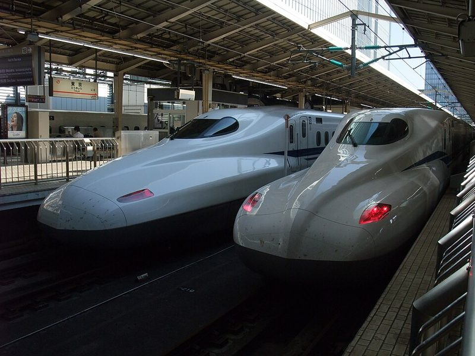
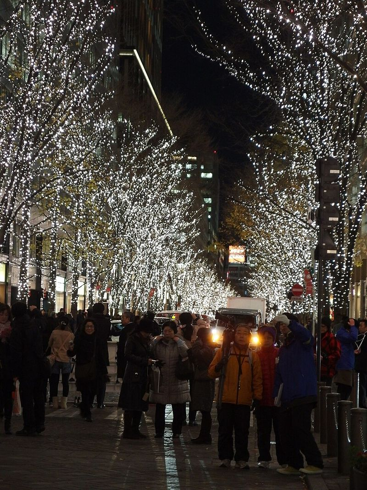

Tokyo, Mt. Fuji & Hakone (Wed Nov 25 – Wed Dec 2, 2026)
Productive daytime sightseeing, dedicated rest breaks between activities, and sunset/evening dress-up & street-food hopping.
2 Adults · Strictly No Pork & No Alcohol
Wake ~09:00 · Out 09:30–10:45 Most Days
Weekday Coasters & Gondolas · Weekend Markets
1.5–3+ Hrs Dedicated Breaks Daily
📊 8-Day Trip at a Glance
Items in chronological scheduled order for each day—tap any day to jump to its photos and schedule below.
| Day | Itinerary Items (In Scheduled Order) |
|---|---|
|
Wed Nov 25
Arrival
|
Shinjuku Skyscraper District → 7-Eleven / Lawson Late-Night Snack Run |
|
Thu Nov 26
West Tokyo
|
Mt. Takao Cable Car → Trail 1 Summit & Trail 4 Suspension Bridge Hike → Yakuo-in Mountain Temple → Shinjuku Omoide Yokocho Lantern Alleys & Kabukicho |
|
Fri Nov 27
Mt. Fuji
|
Lake Kawaguchiko → Mt. Fuji Panoramic Ropeway Gondola → Fuji-Q Highland Launch Coasters (Zokkon & Takabisha) → Shinjuku 'Hana-kin' (Flower Friday) Night Out |
|
Sat Nov 28
Harajuku & Shibuya
|
Meiji Jingu Forest Shrine → Takeshita Street & Omotesando → Matcha Tea Ceremony Class → SHIBUYA SKY Rooftop Deck → Shibuya Scramble Crossing → Costumed Night Street Go-Karting → Ebisu Ramen & Gyoza |
|
Sun Nov 29
Asakusa, Akihabara & Ueno
|
Samurai & Ninja Museum → Hands-On Sushi-Making Class → Akihabara Car-Free Sunday Boulevard → Golden-Hour Kimono Dress-Up → Senso-ji Temple Lanterns & Nakamise Street Stalls → Ueno Ameyoko Night Market → Live Sumo Show |
|
Mon Nov 30
Hakone Loop
|
Odakyu Romancecar Scenic Train → Hakone Ropeway Gondola Over Owakudani Volcanic Valley → Lake Ashi Sightseeing Pirate Ship → Old Tokaido 400-Year Cedar Trail → Traditional Wooden Ryokan & Private Open-Air Hot Spring |
|
Tue Dec 1
Bullet Train & Ginza
|
Tokaido Shinkansen Bullet Train → Tokyo Station Ramen Street & Gransta Food Hall → Ginza & Yurakucho Sunset Stroll → Charcoal-Grilled Unagi (Eel) Dinner → Marunouchi Holiday Illuminations |
|
Wed Dec 2
Departure
|
Shinjuku Gyoen Autumn Landscape Garden → Isetan Depachika Underground Food Hall |
🗓️ Day-by-Day Showcase & Schedule
Wed Nov 25
Arrival in Tokyo & First Night in Shinjuku
📍 Haneda Airport → Shinjuku
Touch down at Haneda Airport (Tokyo's closer city airport), take a direct bus straight into the neon skyscraper district of Shinjuku, grab hot late-night Japanese convenience-store snacks, and get a great night's sleep.

Shinjuku Skyscrapers

Shinjuku Neon Streets
Timed Schedule
-
17:45 Land at Haneda Airport (Tokyo's closer city airport) ☀️ DaytimeClear immigration, baggage claim, and customs using your Visit Japan Web QR codes (~60–90 min total) and withdraw yen cash at a 7-Eleven ATM in the arrival lobby.
-
19:30 Direct Airport Limousine Bus or Train to Shinjuku (Tokyo's Midtown-style skyscraper & hotel hub) ☕ Dedicated RestSit back for a 50–65 minute ride right to Shinjuku Station / major Shinjuku hotels and check into your room.
-
21:00 7-Eleven / Lawson / FamilyMart Late-Night Snack Run (Japanese convenience stores) 🏮 Sunset & NightGrab fresh salmon or tuna onigiri (seaweed rice triangles), tamago sando (fluffy egg-salad sandwiches), hot oden broth, and matcha desserts (use Google Lens to avoid pork/ham), then turn in early.
Thu Nov 26
Mt. Takao Autumn Mountain Hike, Afternoon Nap & Omoide Yokocho Lantern Alleys
📍 West Corridor: Shinjuku ↔ Mt. Takao
Ride the mountain funicular up crimson-maple-covered Mt. Takao on a low-queue Thursday morning, hike across the forested Trail 4 suspension bridge to the 599m Mt. Fuji viewpoint with a 60-minute summit soba lunch break, nap at your hotel in the afternoon, and graze Shinjuku's glowing Omoide Yokocho lantern skewer alleys at sunset.

Mt. Takao Cable Car

Mt. Fuji from Mt. Takao

Mt. Takao Autumn Maples

Yakuo-in Mountain Temple

Mountain Buckwheat Soba

Omoide Yokocho Lantern Alley
Timed Schedule
-
09:30 Seated Keio Line Express from Shinjuku to Takaosanguchi (base of Mt. Takao, 50 min) ☀️ DaytimeDirect 50-minute train from Keio Shinjuku Station (¥430 with Suica) straight to the mountain base.
-
10:30–12:15 Mt. Takao Cable Car Up + Trail 1 Summit & Trail 4 Suspension Bridge Loop (beginner-moderate forest hike) ☀️ DaytimeRide the steep Cable Car funicular halfway up the mountain (short weekday wait!), walk the lively Trail 1 ridge through red autumn maples to the 599m summit overlooking Mt. Fuji, and loop back across the Trail 4 wooden suspension bridge (zero rock-climbing).
-
12:15–13:15 🍜 60-Min Dedicated Summit Sit-Down Break: Hot Buckwheat Soba & Charcoal-Grilled Miso Dango ☕ Dedicated RestSit down at a mountain teahouse for hot tororo soba (buckwheat noodles with grated mountain yam in soy-bonito broth—confirm no pork) and charcoal-toasted sweet miso rice dumplings.
-
13:15–14:30 Yakuo-in Mountain Temple Walk & Cable Car Ride Down (back in Shinjuku by 14:30) ☀️ DaytimeStroll through cliffside Yakuo-in Temple's carved tengu statues, ride the Cable Car down to save your legs for tomorrow, and take the seated Keio train back to Shinjuku.
-
14:30–16:15 🛌 1 Hr 45 Min Dedicated Hotel Rest in Shinjuku ☕ Dedicated RestProtected afternoon rest window—shower, nap, and recharge until sunset (16:29).
-
16:30–19:00 Shinjuku Sunset & Lantern Food-Hopping: Omoide Yokocho ('Memory Lane' skewer alleys) & Kabukicho Neon 🏮 Sunset & NightWalk 5 minutes from your hotel right after sunset into Omoide Yokocho's glowing narrow lantern alleys and under the neon Kabukicho arch for charcoal-grilled chicken yakitori, wagyu skewers, and grilled scallops (show your no-pork card), then head to bed early before Friday.
Fri Nov 27
Mt. Fuji Panoramic Ropeway, Lakeside Break & Fuji-Q Highland Launch Coasters
📍 Mt. Fuji Corridor: Lake Kawaguchiko & Fuji-Q Highland
Head straight to the foot of snow-capped Mt. Fuji on a weekday Friday for the Anakeesta-style Mt. Fuji Panoramic Ropeway gondola over Lake Kawaguchiko, a 75-minute lakeside lunch break, and afternoon high-speed launch coasters (Zokkon motorbike coaster & Takabisha) at Fuji-Q Highland—returning to Shinjuku right in time for 'Flower Friday' evening dining.

Mt. Fuji & Lake Kawaguchiko

Mt. Fuji Panoramic Ropeway

Lake View from the Gondola

Fuji-Q Highland & Mt. Fuji

Fuji-Q Launch Coaster

Fuji-Q Roller Coasters
Timed Schedule
-
08:15–10:00 Seated Highway Coach from Busta Shinjuku to Lake Kawaguchiko (scenic lake at the foot of Mt. Fuji) ☕ Dedicated RestDirect 1 hr 45 min reserved-seat highway bus from Shinjuku Expressway Bus Terminal (4F above Shinjuku South Exit). Grab hot coffee and nap on the coach as Mt. Fuji comes into view.
-
10:15–11:45 Mt. Fuji Panoramic Ropeway (Anakeesta-style mountain gondola & summit viewing deck on Mt. Tenjo) ☀️ DaytimeRide the 3-minute panoramic gondola up to the 1,075m Mt. Tenjo observation deck and snack house staring straight across Lake Kawaguchiko at snow-capped Mt. Fuji, with easy ridge paths at the top.
-
11:45–13:00 🍜 75-Min Dedicated Lakeside Sit-Down Lunch Break & 3-Min Train Hop to Fuji-Q ☕ Dedicated RestSit down by Lake Kawaguchiko for a hot bowl of vegetarian/seafood Hoto (thick flat udon noodles simmered in miso pumpkin broth—ask for no pork), then hop 1 train stop (3 minutes on the Fujikyu Railway) to Fuji-Q Highland Station.
-
13:00–16:30 Fuji-Q Highland Launch Coasters (Zokkon motorbike multi-launch coaster & Takabisha, with a 45-min cafe break) ☀️ DaytimePark entry is free; use pre-booked Priority Tickets (fast-passes) to ride Zokkon (2023 Hagrid's-style motorcycle coaster with 4 high-speed launches and backwards track) and Takabisha (100 km/h linear-motor launch + 121° drop) or Fujiyama right in front of Mt. Fuji—with a dedicated 14:30–15:15 sit-down cafe & warm crepe break between rides.
-
17:00–18:45 🚌 1 Hr 45 Min Seated Highway Coach Nap Back to Shinjuku ☕ Dedicated RestBoard the direct highway coach right outside the Fuji-Q Highland gate and rest all the way back to Shinjuku.
-
19:00 'Hana-kin' (Flower Friday) Dinner & Food-Hopping near Shinjuku Station 🏮 Sunset & NightFriday after 18:00 is Tokyo's liveliest night out as office workers fill the streets. Grab sizzling wagyu teppanyaki, crispy chicken karaage, or sushi right around Shinjuku South/West Exit, then sleep in tomorrow morning!
Sat Nov 28
Sleep-In Harajuku & Shibuya Day + Costumed Night Street Go-Karting
📍 Harajuku → Omotesando → Shibuya → Ebisu (1.5-Mile Corridor)
Sleep in after Friday's Fuji trip, walk under Meiji Jingu's giant cypress forest torii gates, whisk ceremonial matcha tea, take in the 360° open-air view from SHIBUYA SKY, and drive costumed street go-karts through neon-lit Shibuya Crossing and Omotesando at 17:00 before warming up with chicken ramen and gyoza in Ebisu.

Meiji Jingu Forest Torii

Omotesando Boulevard

Matcha Tea Ceremony

SHIBUYA SKY Rooftop

Shibuya Scramble Crossing

Costumed Street Go-Karts
Timed Schedule
-
10:45–12:00 Meiji Jingu Forest Shrine (Shrine #1 of 2 — towering wooden torii gates inside a 170-acre forest) ☀️ DaytimeSleep in until 09:30–10:00, take the 4-minute JR Yamanote ride from Shinjuku to Harajuku, and walk flat gravel paths beneath 100-year-old evergreens and giant cypress gates to the main courtyard.
-
12:00–13:15 🥞 75-Min Dedicated Lunch & Cafe Break: Takeshita Street Crepes & Omotesando Boulevard ☕ Dedicated RestStroll down colorful Takeshita Street right outside Harajuku Station for fresh hot strawberry/custard crepes, then sit down for a relaxed lunch and coffee along tree-lined Omotesando Avenue.
-
13:15–14:15 Traditional Matcha Green-Tea Ceremony Class (seated cultural workshop) ☀️ DaytimeA calm, seated 60-minute session learning to whisk ceremonial-grade matcha green tea paired with seasonal wagashi (traditional sweet bean confections).
-
14:30–15:35 SHIBUYA SKY Open-Air Rooftop Deck (47 stories above Shibuya — Tokyo's Empire State Building) ☀️ DaytimeTimed ticket skips the box-office line. Step out onto the open-air 360° rooftop helipad deck in golden afternoon light looking straight down at Shibuya Crossing and across the skyline toward Mt. Fuji.
-
15:35–16:25 ☕ 50-Min Dedicated Shibuya Sit-Down Break + Walk to Shibuya Annex ☕ Dedicated RestWalk across iconic Shibuya Scramble Crossing (Tokyo's Times Square), sit down at a cafe to warm up and put on your windproof layers and gloves, then walk 12 minutes up Dogenzaka to Street Kart Shibuya Annex.
-
16:30–18:00 Booked: Costumed Night Street Go-Karting (16:30 check-in / 17:00–18:00 full night neon drive) 🏮 Sunset & NightArrive 30 min early at 16:30 at Street Kart Shibuya Annex (10-11 Maruyama-cho 2F) with all 3 physical originals (1949 Geneva IDP + physical US license + physical passport) and closed-toe flat shoes. Pick a costume and roll out at 17:00—right after darkness falls—for a 1-hour guided drive through neon Shibuya Crossing, Omotesando's holiday tree lights, and Harajuku. (If Saturday 17:00 is sold out on Viator, keep your Tuesday Dec 1 17:00 booking!)
-
18:30 Post-Kart Ramen & Gyoza Hop in Ebisu (relaxed upscale foodie neighborhood 1 stop south) 🏮 Sunset & NightHop 1 train stop (2 minutes) from Shibuya to Ebisu to warm up after your night drive with rich tori-paitan (creamy chicken broth) or yuzu-shio ramen and crispy pan-fried chicken/seafood gyoza.
Sun Nov 29
Samurai Museum, Sushi Class, Car-Free Akihabara, Sunset Kimono at Senso-ji & Sumo
📍 East Corridor: Asakusa → Akihabara → Ueno Ameyoko
Spend Sunday daytime trying on samurai armor, throwing real ninja stars, shaping your own sushi for lunch, and walking down the middle of Akihabara's Sunday-only car-free boulevard—then dress in silk kimono at golden hour as Senso-ji's giant red lanterns and 5-story pagoda light up, graze Ueno Ameyoko's open-air night stalls, and finish with a seated Live Sumo Dinner Show.

Samurai Armor Experience

Sushi-Making Class

Akihabara Car-Free Sunday

Senso-ji Temple at Night

Nakamise Street Stalls

Live Sumo Show
Timed Schedule
-
10:30–11:30 Samurai & Ninja Museum in Asakusa (hands-on armor & throwing stars) ☀️ DaytimeStart the morning in historic Asakusa with a 60-minute interactive English tour where you try on samurai helmets/armor, hold replica katanas, and compete at throwing real metal ninja stars (shuriken).
-
11:45–13:15 Hands-On Sushi-Making Class (seated culinary workshop + your lunch) ☀️ DaytimeLearn to season sushi rice and shape your own nigiri and sushi rolls with a local instructor right in Asakusa, then sit down and eat everything you made for lunch (skip the optional sake add-on).
-
13:30–14:30 Akihabara Sunday-Only 'Hokoten' Car-Free Boulevard (Tokyo's neon arcade & electronics avenue) ☀️ DaytimeEvery Sunday from 13:00 to 17:00 (weather permitting), Akihabara closes its main 6-lane boulevard (Chuo-dori) to all cars so pedestrians can walk right down the middle of the street past multi-story GiGO arcades and electronics towers.
-
14:30–15:00 ☕ 30-Min Dedicated Cafe Sit-Down Break Back in Asakusa ☕ Dedicated RestHop 5 minutes back to Asakusa and sit down with a warm drink before your golden-hour kimono stroll.
-
15:00–16:45 Golden-Hour Kimono Dress-Up + Senso-ji Sunset Lanterns (Temple #2 of 2) & Nakamise Street Snacks 🏮 Sunset & NightDress in traditional silk kimono in the cool late afternoon, stroll 250-meter Nakamise-dori for warm melonpan (crispy sweet bread), fresh senbei rice crackers, and matcha sweets, and watch Tokyo's oldest 645 AD Buddhist temple (Senso-ji), giant red Kaminarimon lantern, and 5-story pagoda light up at sunset (16:28).
-
17:00–18:10 Ueno Ameyoko Open-Air Night Market Food-Hopping (bustling stalls under the train tracks, 5 min away) 🏮 Sunset & NightHop 3 stops (5 min on the Ginza Line) to Ueno Ameyoko after dark when the open-air market alleys glow under the elevated train tracks. Graze on hot takoyaki (octopus balls), grilled seafood skewers, and candied fruit skewers (skip pork menchi-katsu).
-
18:30–20:15 Seated Live Sumo Show & Chicken Chanko Hot-Pot Dinner (evening show as Sunday streets quiet down) 🏮 Sunset & NightRight as Sunday evening foot traffic winds down, sit back for a 90-minute live sumo demonstration with former professional rikishi (sumo wrestlers)—including rules explanation, practice bouts, a chance to challenge a wrestler in the ring, and a hearty chicken chanko-nabe hot-pot dinner.
Mon Nov 30
Hakone Volcanic Gondola, Lake Ashi Cruise, Cedar Trail & 1-Night Wooden Ryokan
📍 Hakone National Park Loop (85 Min from Shinjuku)
Soar 130 meters above the steaming sulfur vents of Owakudani on the Hakone Ropeway gondola, sail across volcanic Lake Ashi on a tall-masted sightseeing ship, walk beneath 400-year-old giant cedars along the ancient Old Tokaido trail, and spend Monday night in a traditional wooden Ryokan with tatami mats, yukata robes, and a private open-air hot-spring bath.

Hakone Ropeway Gondola

Owakudani Volcanic Valley

Lake Ashi Sightseeing Ship

Old Tokaido Cedar Trail

Traditional Wooden Ryokan

Open-Air Hot Spring Bath
Timed Schedule
-
10:00–11:25 Odakyu Romancecar Panoramic Express from Shinjuku to Hakone-Yumoto (bring only a 1-night backpack) ☀️ DaytimeLeave your big suitcases stored at your Shinjuku hotel and ride the reserved-seat Odakyu Romancecar (85 minutes direct from Shinjuku) into the mountains of Hakone.
-
11:45–13:00 Hakone Ropeway Gondola Over Owakudani Volcanic Valley (with a 30-min summit snack & viewing break) ☀️ DaytimeRide the Swiss-built panoramic gondola 130 meters above the steaming sulfur vents of Owakudani crater valley with views of Mt. Fuji. Step out at Owakudani Summit Station for a 30-minute viewing break and taste the famous black volcanic hot-spring eggs (kuro-tamago).
-
13:00–13:35 Lake Ashi Sightseeing Pirate Ship Cruise (from Togendai to Moto-Hakone) ☀️ DaytimeRide the ropeway down to the lakeshore and board the tall-masted sightseeing ship for a peaceful 35-minute cruise across volcanic Lake Ashi past the red lakeside torii gate of Hakone Shrine.
-
13:35–14:30 ☕ 55-Min Dedicated Lakeside Bakery & Cafe Sit-Down Lunch Break at Moto-Hakone ☕ Dedicated RestProtected 55-minute sit-down lunch and warm drink break right on the Lake Ashi waterfront (such as Bakery & Table Hakone or a lakeside soba cafe) before starting the forest walk.
-
14:30–15:20 Old Tokaido Highway Cedar Avenue Trail (easy-moderate 45-min walk under 400-year-old giant cedars) ☀️ DaytimeWalk a preserved section of the ancient feudal highway between Edo (Tokyo) and Kyoto, shaded by over 400 towering 400-year-old Japanese cedar trees alongside Lake Ashi—flat-to-gentle terrain, zero climbing.
-
16:00 Onward Check into Traditional Wooden Ryokan (tatami straw floors, yukata robes, private open-air hot spring & kaiseki dinner) 🏮 Sunset & NightArrive right before sunset (16:28). Change into your yukata (cotton kimono), slide open the shoji paper screens, soak in a private open-air hot-spring bath (rotenburo) listening to the mountain stream, and enjoy a multi-course wagyu & seafood dinner (confirm no pork when booking) before sleeping on plush futons on tatami mats.
Tue Dec 1
33-Min Shinkansen Bullet Train, Tokyo Station Ramen Street, Afternoon Nap & Ginza Lights
📍 Odawara → Tokyo Station → Ginza & Marunouchi
Enjoy a relaxed morning hot-spring soak at your Hakone Ryokan, ride the 175-mph Tokaido Shinkansen Bullet Train for 33 minutes straight into Tokyo Station, feast at Tokyo Ramen Street & Gransta food hall, take a full 2.5-hour afternoon nap, and celebrate your final evening with charcoal-grilled unagi (eel) in Ginza and a night stroll under 1.2 million champagne-gold lights in Marunouchi.

Shinkansen Bullet Train

Tokaido Shinkansen

Tokyo Station at Night

Charcoal-Grilled Unagi (Eel)

Marunouchi Holiday Lights

Marunouchi Winter Walk
Timed Schedule
-
09:00–11:00 Unhurried Ryokan Breakfast, Morning Hot-Spring Soak & Short Hop to Odawara Station ☀️ DaytimeEnjoy a traditional Japanese breakfast and one last morning soak in the hot spring at your Ryokan, then take the 15-minute train/taxi down to Odawara Shinkansen Station.
-
11:30–12:03 Tokaido Shinkansen Bullet Train from Odawara to Tokyo Station (33 minutes at up to 175 mph) ☀️ DaytimeExperience Japan's world-famous N700S Shinkansen Bullet Train on a smooth, effortless 33-minute ride directly into the heart of Tokyo Station—getting the full bucket-list bullet-train experience without a 6-hour round trip to Osaka.
-
12:15–13:45 Tokyo Station Ramen Street & Gransta Food Hall (spotless, upscale indoor food-stall & chef concourse) ☀️ DaytimeRight inside Tokyo Station where your Bullet Train arrives: stroll counter-to-counter through Gransta and Tokyo Ramen Street—8 of Japan's most celebrated ramen shops plus gourmet wagyu bento counters, crispy fried seafood tempura, sushi bowls, and artisan desserts in a spotless department-store concourse (choose chicken/shoyu/seafood or vegan ramen; avoid pork tonkotsu).
-
14:15–16:45 🛌 2.5-Hour Dedicated Hotel Rest in Shinjuku ☕ Dedicated RestDrop your overnight backpack at your Shinjuku hotel and enjoy a full 2.5-hour afternoon nap before your final night out. (Note: if you kept your 17:00 Shibuya Night Go-Kart booking on Tue Dec 1 instead of moving it to Sat Nov 28, head to Shibuya at 15:50 for your 16:30 kart check-in!)
-
17:15–19:00 Ginza & Yurakucho Sunset Food Stroll + Charcoal-Grilled Unagi (Freshwater Eel Over Rice) Dinner 🏮 Sunset & NightStroll past the glowing brick railway arches at Yurakucho and upscale Ginza for a celebratory final dinner of charcoal-grilled unagi (freshwater eel glazed in sweet soy tare over steamed rice, or hitsumabushi—confirm no alcohol/mirin issue if strict).
-
19:00–20:30 Marunouchi Nakadori Holiday Illuminations & Red-Brick Tokyo Station Night Walk 🏮 Sunset & NightFinish your last evening walking down tree-lined Marunouchi Nakadori Avenue under 1.2 million champagne-gold winter lights and past the illuminated 1914 red-brick facade of Tokyo Station.
Wed Dec 2
Shinjuku Gyoen Autumn Garden, Isetan Depachika Food Hall & Afternoon Flight
📍 Shinjuku → Haneda Airport (16:50 Flight)
Spend a calm final morning strolling under crimson autumn maples and pond bridges in Shinjuku Gyoen right beside your hotel, take a 30-minute coffee break, graze freshly fried tempura and wagyu snacks at Isetan's famous luxury basement food hall, and catch your direct 12:15 bus to Haneda for your 16:50 flight home.

Shinjuku Gyoen Pavilion

Shinjuku Gyoen Autumn Maples

Fresh Tempura Rice Bowl
Timed Schedule
-
09:00–10:00 Shinjuku Gyoen National Garden (58-hectare imperial landscape garden in late-autumn maple color) ☀️ DaytimeLeave your packed bags with the hotel bell desk and enter right at 09:00 opening (¥500) for a flat, peaceful 60-minute walk across wooden pond bridges, Japanese tea pavilions, and late-November red maples.
-
10:00–10:30 ☕ 30-Min Dedicated Coffee & Pastry Sit-Down Break ☕ Dedicated RestSit down at a cafe right between Shinjuku Gyoen and Isetan before the department store doors open at 10:00.
-
10:30–11:50 Isetan Shinjuku 'Depachika' (luxury underground food-stall hall for prepared foods, tempura & gifts) 🏮 Sunset & NightWalk stall-to-stall through Isetan's gleaming basement food hall sampling freshly fried shrimp/vegetable tempura, wagyu croquettes (confirm no pork), fruit daifuku mochi, and boxed matcha/yokan gifts to pack in your carry-on.
-
12:15 Airport Limousine Bus from Shinjuku to Haneda Terminal 3 (arriving ~13:30 for 16:50 flight) ☀️ DaytimePick up your bags at the hotel, board the direct Airport Limousine Bus (~60 min), and arrive at Haneda Terminal 3 with plenty of time for tax-free airport shopping before your 16:50 flight home.